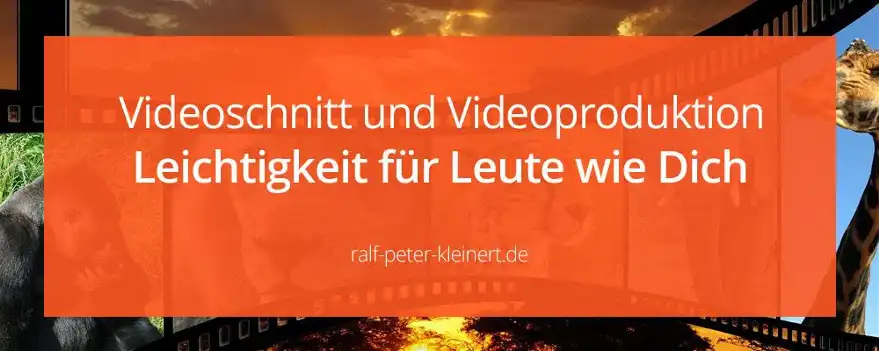
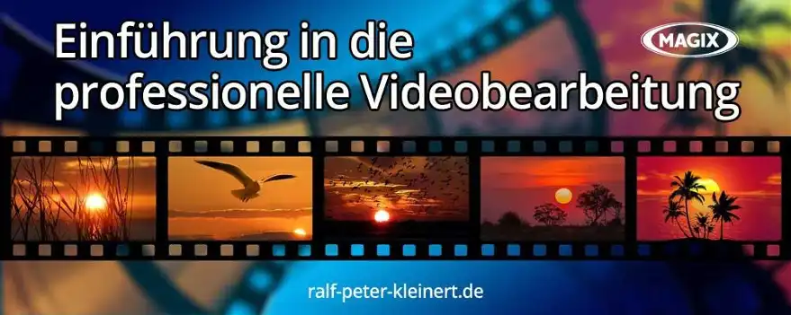
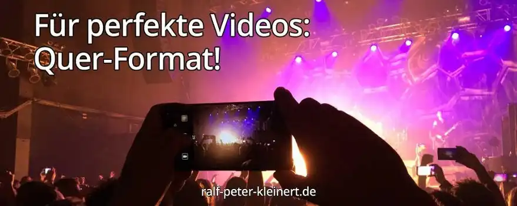

Videobearbeitung Schritt für Schritt lernen
Videobearbeitung lernen
- Einführung in Videobearbeitung
- Was brauche ich für Videoschnitt?
- kostenlose Cam-App Android
- Das erste Video drehen
- Was muss in ein gutes Video?
- Zusammenfassung
Weiter
Übersicht
Noch mehr Tipps zur Videobearbeitung:Einführung in die Video-Bearbeitung
Dieser Artikel richtet sich an Menschen, die Schnitt und Bearbeitung von Videos lernen möchten. Er ist speziell auf Android Handy-Videos und Schnitt am PC bzw. Laptop mit Magix Video Deluxe ausgerichtet.
Alle Infos zur technischen Umgebung sind ebenfalls im Artikel. Ich habe mich für die einfachste Art entschieden dir die professionelle Filmbearbeitung vorzustellen. Du willst ja als Anfänger auch schnell einen Erfolg verbuchen.
Verabschiede dich von dem Gedanken, in die Suchmaschine "Videoschnitt lernen" einzugeben, die ersten Ergebnisse durchzulesen und dann zu glauben, du könntest plötzlich Videos bearbeiten wie ein Profi. Das ist die Königsdisziplin am und für den Computer. Das muss gelernt werden, wenn du richtig geile Videos machen willst.

In diesem Artikel gehen wir die Basics der Videobearbeitung durch. Plane genügend Zeit zum üben ein. Videoschnitt, Videobearbeitung, Editing und Postproduktion zu lernen, braucht diese Zeit. Durchlesen und losschneiden, ist nicht. Das muss in den Kopf rein!
Da hier die Rede von den Basics ist, sind wir noch lange nicht beim Schnitt. Erst mal die wichtigsten Fragen aus dem Bereich Video- und Filmproduktion klären. Bist du kein absoluter Neuling, kannst du gerne zu "Inhalte des Artikels" springen. Viel Freude, sehr viel Geduld und viel Erfolg!
- Wie kann ich Videobearbeitung lernen?
- Was ist Videoschnitt?
- Wie schneidet man Videos?
- Was muss man alles beachten?
- Wie mache ich ein gutes Video?
Tipp
In diesem Artikel gehen wir von Videomaterial mit einer Auflösung von: Full-HD (1080p, 1920px x 1080px) vom Android-Handy aus. Geht aber auch mit allen anderen FullHD-Cams.
Was brauche ich für Videoschnitt?
Du benötigst zum einen Videomaterial und die technischen Mittel zum Arbeiten. Die Grundausstattung für einen fertigen YouTube-Film:
- eine Handy-Kamera
- ein externes Mikrofon
- einen Computer
- eine Videoschnitt-Software
1.Handy mit Full-HD Kamera. Auf die Einstellungen deiner Kamera gehe ich später noch ein. Du bekommst auch schon sehr gute Kameras von GoPro, die sich prima eignen. Ein normales Handy genügt für den Anfang vollkommen.
2. Du wirst später feststellen, dass der Ton beinahe wichtiger ist als das Bild. Ist der Ton mies, schaltet jeder weg, egal wie gut das Video ist. Du bekommst ein Microfon schon für ein paar Euro. Ich habe hier mal ein Mikrofon verlinkt, welches ich auch benutze. Der Sound ist eine andere Welt.
3. Du brauchst einen leistungsstarken Computer. Es geht auch auf dem Handy und natürlich auch auf dem Laptop. Wenn du es aber richtig gut machen willst, empfehle ich dir einen richtigen PC mit anständig großem Bildschirm. Besser sind sogar 2 Bildschirme. Hast du aber nur einen Bildschirm, geht das auch. Für den Schnitt in Full-HD sind die meisten Computer gerüstet. Hast du aber einen alten, verschrumpelten Computer, der Probleme hat eine Internetseite aufzubauen, wird es schwierig. Die Computer-Mindestanforderungen für den Schnitt mit Magix sind hier kurz beschrieben.
Tipp
Um so komplexer dein Video, Effekte, Berechnungen wie Kontrast und Farbe, viele Videospuren usw. umso mehr Muckis braucht der Rechner. Wenn du statt Full-HD in 4K schneiden willst, benötigst du ne richtig fette Maschine! Sonst verlierst du ganz schnell die Freude.
4.Du brauchst ne ordentliche Videoschnitt-Software (Davinci Resolve). Überall im Internet findest du Anleitungen und Tutorials zu Adobe Premiere, DaVici Resolve und weitere Programme. Bist du Anfänger, rate ich davon ab. Du wirst wahnsinnig, wenn du keine Ausbildung hast. Kostenlos solltest du dir auch aus dem Kopf schlagen. Manchmal benötigst du Support, oder Updates.
Nachtrag 07.05.2024: Ich empfehle inzwischen sich mit Davinci Resolve auseinanderzusetzen. Man kann die Software in einer kostenlosen Version unbegrenzt nutzen. Absolutes Profiltool. Nach 3 Monaten intensiver Arbeit damit, kann ich sagen, dass man sich da genauso gut einarbeiten kann, wie in jede andre Software auch. Viel stabiler als Magix - ich bin komplett umgestiegen.
Hier das Video: "Boop the Bumblebee". Komplett in Magix VideoDeluxe bearbeitet. Auch die Musik wurde mit Magix Software produziert.
Ich empfehle dir hier Magix Video Deluxe! Auf Magix ist auch mein gesamter Artikel ausgerichtet. Die Software ist wirklich gut. Warum empfehle ich dir Magix?
- für diese Leistung extrem kostengünstig
- sehr leicht zu erlernen
- Top Support und Nutzerforum
- Hersteller aus Berlin und gut zu erreichen
- Video Deluxe das beste Programm für Anfänger
- rasend schnell Erfolge im Videoschnitt
- eine einfache Oberfläche
- die Software stabil läuft
- das einfachste Programm auf dem Markt
Ich habe auf Adobe Premiere gelernt und nutze Premiere und DaVinci. Aber gerade, weil ich das gelernt habe, weiß ich was das für dich als Anfänger bedeuten würde. Wenn du schnell und trotzdem in einer absoluten Topqualität Videos machen willst, lernst du das am besten mit Magix. Magix ist der Marktführer im Privatbereich und hat die größte Erfahrung.
Im Magix Online-Shop und bekommst du Video Deluxe ab 69.99 €*. Und 70 € sind lächerlich für das Paket, die Software, Effekte und die vielen Lernvideos die du bekommst. Du kannst Video Deluxe zum Testen und Büffeln kostenlos runterladen!
Tipp
Auch gibt es bei YouTube unzählige Creator die mit Magix arbeiten und Tutorials gemacht haben. Diese Masse an Lernmaterial, dass so einfach ist, kann keine andere Software bieten.
Nochmal zusammengefasst. Du benötigst 1. eine Kamera um deine Videos zu drehen, 2. ein externes Mikrofon für guten Ton, 3. einen Computer, der in der Lage ist dein Material zu verarbeiten und 4. eine Videoschnitt-Software. Hast du diese 4 Bestandteile deiner Produktions-Ausrüstung kann es losgehen.
Die richtige Android-Kamera-App
Es gibt 2 ganz entscheidende Einstellmöglichkeiten in der kostenlosen Kamera-App Open Camera für Andriod, die du problemlos bei Google-Play runterladen kannst. Zum einen kannst du die Belichtung feststellen und zum anderen den Fokus. Standart-Apps auf den Handys können das in der Regel nicht. Bei jedem Kameraschwenk ändern sich die Helligkeit und die Schärfe, wenn man beides nicht feststellen kann. Das sieht meistens total doof aus.
Das erste Video zum Schneiden drehen
Du hast eine Kamera, einen PC zum Schneiden und die Software von Magix. Du kannst also loslegen. Jetzt werden wir aber keinen Blockbuster produzieren, sondern gehen mal die wichtigsten Kamera-Einstellungen durch. Es gibt unzählige Auflösungen, Bildwiederholfrequenzen, Formate usw. Darauf gehe ich später noch genauer ein. Zunächst soll dein schneller Erfolg im Videoschnitt ganz oben stehen. Der Rest ist dann Übungssache.
Gehe in dein Kamera-Menü, oft ist es ein kleines Zahnrad in deiner Kamera-App.
- öffne deine Kamera-App
- schalte in den Videomodus
- gehe in die Kameraeinstellungen
- stelle 16 : 9, Full-HD 1080p bzw. 1080i, 24/25 FPS ein
- Bitrate, Farbe, Weißabgleich, Belichtung, Focus auf Auto
- speichere die Einstellungen
Da ich hier nicht alle Kameras abdecken kann, zieh im Zweifel die Bedienungsanleitung zurate.

Wichtig ist, dass die Kamera in 16 : 9 Format, Full-HD-Auflösung und 24/25 FPS eingestellt ist. Was es mit den FPS auf sich hat, erkläre ich dir später noch genauer.
Tipp
Auf den Speicherort im Handy und wie du die Daten auf den PC bekommst bin ich jetzt nicht eingegangen. Ich denke, das sollte jeder wissen. Du kannst aber, wenn du Schwierigkeiten hast, das vielleicht doch nicht wusstest gerne eine Mail an mich unter Kontakt senden.
Sind die Einstellungen vorgenommen, kann das Filmen beginnen. Und wenn du noch nie ein Video gedreht hast, machst du dich jetzt erst mal mit der Kamera vertraut. Drücke den Aufnahmebutton und filme los. Teste und probiere alle möglichen Einstellungen. Beispiel: Auf dem Tisch steht eine Blumenvase. Stelle die Kamera-Entfernung ein, indem du an die Vase heran, oder von ihr weggehst. Stelle die Schärfe ein, dass die Vase gut zu erkennen ist.
Filme, stelle dich woanders hin und filme weiter, spiele mit den Perspektiven, also die Cam mal hoch, mal runter. Lerne deine Kamera kennen. Bei einem Handy hast du einen riesigen Bildschirm, auf dem du genau sehen kannst, was du da gerade filmst. Mache dich mit deiner Kamera vertraut. Setze dich auch ruhig mal hin und gehe die ganzen Einstellungen durch. Probiere bis der Arzt kommt! Denn erst, wenn du halbwegs brauchbares Videomaterial erstellt hast, macht es überhaupt Sinn das vom Handy in eine Videoschnittsoftware zu importieren.
Tipp
Halte dein Handy oder deine Cam erst mal immer im Querformat. Filme genau so, wie dein Fernseher vor dir steht. Wenn deine Glotze allerdings hochkant in der Bude steht, dann halte auch das Handy hochkant. :-)
Was gehört in ein gutes Video?
Es ist eigentlich egal, was für ein Video du machen willst. Ob du ein Erklär-Video erstellen willst oder für den Chef ein Firmenvideo drehen, ob du ein YouTube-Video erstellen willst, alle diese Videos haben etwas gemeinsam. Die Bestandteile bzw. die Bausteine eines guten Videos. Es gibt immer gestalterische Ausnahmen. Video- und Filmproduktion ist schließlich eine Kunstform.
Die 5 wichtigsten Elemente eines guten Videos sind:
- die Videoaufnahmen
- Ton, Musik, Geräusche
- Bilder und Grafiken
- Animationen
- Text und Schrift
Tipp
Magix ermöglicht es dir, alle 5 Elemente in einem Video einfach und leicht zu integrieren. Ohne zusätzliche Kosten, Plugins oder Tools die du besorgen musst.
Diese 5 Bestandteile, sollten in jedem Video vorkommen, um es wirklich gutzumachen. Da kannst du dich nach dem Richten, was so in der Glotze läuft. Es gibt immer Ausnahmen, aber für dich als Neuling ist es wirklich eine gute Idee dir die 5 Punkte ins Gehirn zu brennen.
Aufgabe
Schau dir das folgende Video "einfaches Lernen" von Galileo an. Achte dabei ganz bewusst auf die 5 Elemente eines guten Videos. Schau es dir, wenn nötig mehrmals an. Was fällt dir auf, was sonst beim abendlichen Berieseln nicht so heraussticht?
1. Nachdem ich dir im Teil das erste Video drehen, den Ratschlag gab - probiere bis der Arzt kommt, sollte das Videomaterial nicht mehr das große Problem darstellen.
2. Im Galileo Video, kannst du sofort hören, dass der Ton durchgehend und sehr vielfältig ist. Der Ton ist von der Wichtigkeit auf die gleiche Stufe zu stellen, wie das Bild. Ein schlechter Ton macht jedes Video zunichte. Schau dir den Galileo-Beitrag nochmal an und achte auf den Ton!
3. Bilder, Fotos und Grafiken werden sehr oft in professionellen Videos genutzt. Nicht immer sind alle 3 enthalten. Manchmal sind auch gar keine enthalten. Du kannst aber fast immer einen Platz dafür finden, um deine Botschaft noch besser zu untermauern. Im Galileo-Video werden Grafiken eingesetzt. Achte nochmal darauf.
4. Ganz besonders in Galileo-Videos siehst du ständig grafische Elemente und Animationen. Solche Animationen selbst zu machen ist schwer, aber in der Magix Software ist eine solche Animations-Möglichkeit enthalten. Achte nochmals besonders auf die Grafik-Elemente und überlege, was diese bewirken.
5. Du kannst im Beitrag gut erkennen, dass die Video-Macher viel Text unterbringen. Mit Text kannst du deine Botschaft untermauern und ein klares Verständnis für deine Geschichte erzeugen. Schaue dir das Video nochmal an und analysiere die Textbausteine. Was fällt dir auf?
Zusammenfassung: Elemente eines guten Videos:
Ein Video ist nur unterhaltsam, wenn die ausgewählten der 5 Elemente gut gemacht und stimmig sind. Ein Video ist nur spannend, wenn es unterhaltsam ist. Ist ein Video nicht unterhaltsam, ist es nicht spannend und schon gar nicht interessant. Niemand will das sehen und alle klicken wieder weg. Erst wenn diese 5 Elemente passen und stimmen, wird sich ein echter Erfolg einstellen.
Tipp
Wenn du fern siehst gewöhne dir einfach an, die Filme und Sendungen zu analysieren. Achte darauf wie die Videos gemacht sind. Schaue dir die Kameraperspektiven an. Achte darauf wie die Schnitte gesetzt sind und was der Ton für eine Rolle spielt. Schärfe deinen Blick für die technische Seite von Filmen und du wirst so unglaublich viel lernen.
War eine Weile beschäftigt - mit Videoschnitt
Für alle die auf neue Informationen warten, oder warteten. Ich werde nun am Artikel Weiterarbeiten. Ich habe allerdings für alle Videobegeisterte einen klasse Ausrede. Ich habe nämlich ein neues Video bearbeitet und möchte euch das Ergebnis hier nun auch zeigen.
Zusammenfassung
In den Abschnitten 1-4 habe ich dir die Voraussetzungen erklärt. Die Technik und die Software die du brauchst. Um diesen Videolehrgang hier abzuarbeiten ist es empfehlenswert, dir diese technische Umgebung anzuschaffen. Die meisten Menschen haben ein Android-Handy. Lade dir die Open Camera App und die kostenlose Version von Video Deluxe herunter. Kaufe dir das Programm besser, denn damit hast du eine Software die dich voranbringt.
Arbeite 1-4 komplett durch, zieh dir die App, dein Handy und Video Deluxe rein. Übe. Mach einfach n paar blödsinnige Filmchen, schnippel und schneide. Probiere es alles mal aus. Hier den Text durchlesen und dann plötzlich n Cutter sein, kannste vergessen!
Nachtrag 07.05.2024: Ich empfehle inzwischen sich mit Davinci Resolve auseinanderzusetzen. Man kann die Software in einer kostenlosen Version unbegrenzt nutzen. Davinci ist ein absolutes Profiltool. Nach 3 Monaten intensivster Arbeit damit, kann ich sagen, dass man sich da sehr gut einarbeiten kann, wie in jede andre Software auch. Viel stabiler als Magix - ich bin komplett umgestiegen.
Ich belasse diesen Artikel aber auf Magix zugeschnitten, weil es dennoch eine gute und einfache Möglichkeit ist sich in die Videoproduktion einzufinden. Ein Resolve Artikel folgt...
Aktualisiert: Ralf-Peter Kleinert 07.05.2024